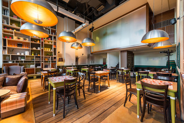
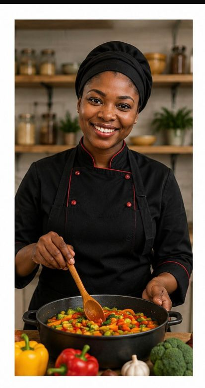

Notre histoire, nos valeurs et notre équipe

TERANGA FOOD est né d'une passion profonde pour la cuisine sénégalaise et d'un désir de partager les saveurs authentiques de l'Afrique de l'Ouest.
Fondé en 2018 à Dakar, notre restaurant s'est rapidement imposé comme une référence de la gastronomie sénégalaise.
TERANGA FOOD met en avant les saveurs du Sénégal à travers des recettes traditionnelles et modernes. Notre objectif est d'offrir à chaque client une expérience culinaire conviviale et authentique.
Des ingrédients soigneusement sélectionnés.
Normes strictes dans notre cuisine.
Un accueil chaleureux inspiré de la teranga.
Recettes fidèles à l'héritage culinaire sénégalais.

Lun – Ven : 08h – 22h
Sam – Dim : 09h – 23h
© 2026 TERANGA FOOD. Tous droits réservés.